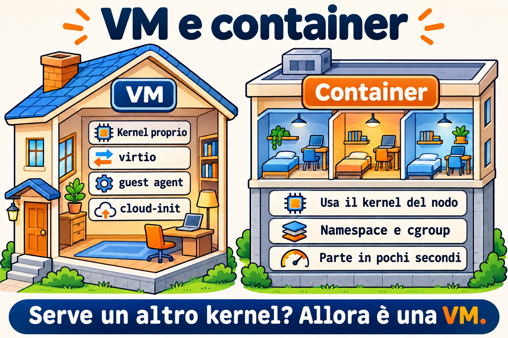
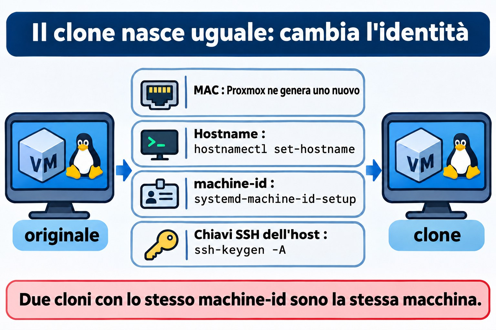

Lezione 5.3 · Linux come guest
Nelle Lezioni 5.1 e 5.2 hai visto il kernel parlare con l'hardware. Solo che, nelle tue due VM, quell'hardware non esiste: a rispondere è QEMU, che gira sul nodo Proxmox. Oggi vedi Linux dall'interno della VM. Come fa a sapere di essere un guest, quali driver usa per andare più veloce, come parla con l'hypervisor tramite il guest agent e come viene configurato da solo al primo boot da cloud-init. Vedrai anche cosa succede quando qualcuno clona una VM e dimentica che certe cose devono essere uniche. Alla fine confronti una VM con un container, che sembra una macchina ma usa il kernel di un'altra.
Il cuore di questa lezione:
systemd-detect-virtehostnamectlper sapere dove ti trovi; i dispositivivirtio; ilqemu-guest-agent, da entrambi i lati (pacchetto nella VM, opzione in Proxmox); cosa fa cloud-init al primo boot; cosa deve essere unico in un clone: hostname,/etc/machine-ide le chiavi SSH dell'host; e la differenza tra VM e container: il kernel. Il resto è approfondimento.
| Scheda | Lezione 5.3 |
|---|---|
| Modulo | M5 · Hardware, kernel e virtualizzazione, lezione 3 di 3 |
| Quando | Settimana 9 |
| Alla fine sei in grado di | Dire se Linux gira in una VM, in un container o su una macchina fisica, e con quale hypervisor; riconoscere i dispositivi virtio e i loro moduli; installare e attivare il guest agent nella VM e in Proxmox, e usarlo con qm agent e qm guest cmd; spiegare cosa fa cloud-init e quando gira; elencare cosa deve essere unico in un clone e cambiare hostname, machine-id e chiavi SSH dell'host; vedere nella pratica che un container usa il kernel dell'host |
| Prerequisiti | Lezione 5.1 (lspci -k, /sys, dmesg); Lezione 5.2 (lsmod, modinfo); Lezione 4.2 (systemd e unit); l'SSH tra il tuo computer e le VM |
| Durata | Circa 2h30, più la Sfida del modulo |
| Snapshot | m5a3-inicio e m5a3-fim su entrambe le VM; m5-desafio prima della Sfida |
1 · Riscaldamento
Tre domande, a memoria. Scrivi le risposte; le soluzioni le controllano alla fine.
- Entri via SSH su una macchina sconosciuta. Secondo te, con un solo comando si può capire se è una VM?
- Cloni una VM Linux in Proxmox e accendi entrambe. Secondo te, avranno lo stesso
/etc/machine-id? E conta qualcosa? - Un container Debian gira dentro la tua rocky-lab. Secondo te, cosa mostra
uname -ral suo interno, il kernel di Debian o quello di Rocky?
2 · Perché conta
| La richiesta | La risposta sbagliata | Cosa provoca |
|---|---|---|
| "Proxmox non mostra l'IP della VM, e lo spegnimento dalla GUI non funziona" | Spegnere con il pulsante Stop | Lo Stop è come staccare la spina. Quello che mancava era il guest agent: con lui, Proxmox vede l'IP, chiede uno spegnimento pulito e congela il file system durante il backup |
| "Ho clonato la VM e ora le due si contendono lo stesso IP del DHCP, e il monitoraggio ne vede una sola" | Cambiare l'hostname e considerare chiusa la questione | Il machine-id e le chiavi SSH restano uguali. A seconda della rete, il DHCP identifica le due come la stessa macchina; anche il journal, il monitoraggio e molti agent usano il machine-id |
"SSH dice che l'identificazione del server è cambiata: REMOTE HOST IDENTIFICATION HAS CHANGED" | Cancellare tutto il known_hosts, o ignorare l'avviso | A volte è solo un clone con chiavi nuove. A volte è un attacco. Chi sa quando le chiavi sono cambiate e perché decide con calma e rimuove solo la riga giusta |
| "Facciamolo girare in un container, che è più leggero" | Trattare il container come una VM più piccola | Il container usa il kernel dell'host. Non carica moduli propri, non sceglie la versione del kernel e, se il kernel dell'host va giù, va giù anche lui |
3 · Modello mentale
Pensa a un edificio per uffici, come nella Lezione 5.1. Una VM è una stanza in affitto con portineria propria: il suo kernel è tuo, con i tuoi driver, e l'hypervisor finge di essere l'hardware. I driver
virtiosono il citofono diretto con l'amministratore: invece di fingere un hardware vecchio, il guest sa di essere in una VM e parla la lingua dell'hypervisor, che è più veloce. Il guest agent è il custode della stanza, che risponde all'amministratore (Proxmox) quando questi chiede l'IP o ordina di chiudere tutto. cloud-init è il kit del trasloco: il primo giorno monta la stanza con il nome, gli utenti e le chiavi arrivati nel pacchetto. Un container non è una stanza con portineria: è un tramezzo dentro un'altra stanza, che usa la stessa portineria (lo stesso kernel).
MÁQUINA FÍSICA (nó Proxmox)
┌───────────────────────────────────────────────────────────────┐
│ kernel do nó (KVM) │
│ ┌────────────── QEMU ─────────────┐ ┌──── LXC ───────────┐ │
│ │ VM rocky-lab │ │ contêiner │ │
│ │ kernel PRÓPRIO │ │ processos isolados │ │
│ │ virtio_net, virtio_scsi │ │ SEM kernel próprio │ │
│ │ qemu-guest-agent ◄── canal ────┼─► │ usa o kernel do nó │ │
│ │ cloud-init (1º boot) virtio-serial │ │ │
│ └─────────────────────────────────┘ └─────────────────────┘ │
└───────────────────────────────────────────────────────────────┘

4 · L'essenziale
Dove sono?
| Comando | Cosa mostra |
|---|---|
systemd-detect-virt | kvm, qemu, vmware, microsoft, oracle... in una VM; lxc, podman, docker... in un container; none sulla macchina fisica |
systemd-detect-virt -c / -v | Solo container / solo VM |
hostnamectl | Riga Virtualization: e Chassis: vm, oltre a hostname e kernel |
lscpu | grep -i hypervisor | Hypervisor vendor: KVM |
sudo dmidecode -s system-product-name | Il "modello" che l'hypervisor si è inventato, come Standard PC (Q35 + ICH9, 2009) |
I driver virtio
L'hypervisor può imitare un hardware reale e vecchio, come la scheda di rete e1000 o un disco IDE. Funziona su qualsiasi sistema, ma è lento, perché ogni accesso viene tradotto. virtio è un hardware che esiste solo nelle VM: il guest lo sa e parla direttamente con l'hypervisor. In Linux, i driver virtio sono già nel kernel.
| Dispositivo in Proxmox | Driver nel guest | Come appare |
|---|---|---|
| VirtIO SCSI (controller) | virtio_scsi | Dischi sda, sdb... |
| VirtIO Block | virtio_blk | Dischi vda, vdb... |
| Scheda VirtIO | virtio_net | ens18 o eth0 |
| Balloon | virtio_balloon | L'hypervisor può riprendersi la RAM |
| RNG VirtIO | virtio_rng | Fonte di casualità |
| Seriale VirtIO | virtio_console | Il canale del guest agent |
Il guest agent
Il qemu-guest-agent è un servizio che gira dentro la VM e risponde a Proxmox tramite un canale seriale virtuale. Ha bisogno di due metà, e dimenticarne una è l'errore classico:
- In Proxmox: l'opzione
QEMU Guest Agentattivata (qm set ID --agent enabled=1). Crea il dispositivo seriale, e vale solo dopo aver spento e riacceso la VM da Proxmox. - Nella VM: il pacchetto
qemu-guest-agentinstallato e il servizio in esecuzione.
Con entrambe le metà, Proxmox mostra gli IP nella GUI, fa uno spegnimento pulito, congela il file system (fsfreeze) durante il backup perché la copia esca coerente, e ti lascia fare domande con qm agent e qm guest cmd.
cloud-init
cloud-init gira al primo boot di un'immagine cloud e configura la macchina con dati che arrivano dall'esterno: hostname, utenti, chiavi SSH autorizzate, rete e pacchetti. Questi dati arrivano da una datasource: un servizio di metadati su AWS o OpenStack, oppure un CD virtuale in Proxmox (la scheda Cloud-Init). cloud-init conserva un instance-id: finché non cambia, la macchina non si considera nuova e non rifà la configurazione del primo boot.
| Comando o file | A cosa serve |
|---|---|
cloud-init status --long | È partito? Ha finito? Ci sono errori? |
/var/log/cloud-init.log e cloud-init-output.log | Cosa ha fatto, passo dopo passo |
/etc/cloud/cloud.cfg e /etc/cloud/cloud.cfg.d/ | Cosa è autorizzato a modificare |
sudo cloud-init clean --logs | Cancella lo stato. Al prossimo boot agisce come se fosse la prima volta. È quello che si fa prima di trasformare la VM in un template |
Cloni e cosa deve essere unico
Un clone completo copia l'intero disco. Un clone collegato (linked clone) usa il disco del template come base e scrive solo le differenze. In entrambi i casi, il disco del clone parte uguale all'originale, con tutto ciò che contiene:
| Identificatore | Dove si trova | Chi lo cambia |
|---|---|---|
| Indirizzo MAC | Configurazione della VM | Proxmox ne genera uno nuovo nel clone |
| Hostname | /etc/hostname e /etc/hosts | Tu, con hostnamectl set-hostname, oppure cloud-init |
machine-id | /etc/machine-id (su Debian, anche /var/lib/dbus/machine-id) | Tu, con systemd-machine-id-setup, oppure l'immagine arriva già con il file vuoto |
| Chiavi SSH dell'host | /etc/ssh/ssh_host_* | Tu, con ssh-keygen -A, oppure cloud-init |
| IP fisso | Configurazione di rete | Tu, oppure cloud-init |
Il machine-id è il "codice fiscale" dell'installazione: 32 caratteri esadecimali creati durante l'installazione. Il journal conserva i log in una cartella con quel nome, systemd-networkd usa quell'ID per identificarsi nel DHCP, e lo fanno anche molti agent di monitoraggio o di backup. Due cloni con lo stesso machine-id sono, per questi strumenti, la stessa macchina.
Le chiavi SSH dell'host dimostrano al client che il server è lo stesso dell'ultima volta. Due cloni con le stesse chiavi sono indistinguibili per SSH: se uno dei due viene compromesso, la sua chiave privata serve per spacciarsi per l'altro.


VM e container a confronto
VM (QEMU/KVM, qm) | Container (LXC con pct, Podman, Docker) | |
|---|---|---|
| Kernel | Proprio | Quello dell'host |
| Boot | GRUB, initramfs, systemd | Parte direttamente dal processo principale, a volte un systemd |
Moduli e sysctl | Carica e modifica i suoi | Non carica moduli; molti sysctl sono in sola lettura o dell'host |
| Altro sistema operativo | Qualsiasi, anche Windows | Solo Linux, con il kernel di chi ospita |
| Isolamento | Forte: lo separa l'hypervisor | Più debole: tutto dipende dal kernel condiviso |
| Costo | Più RAM e più disco | Leggero: parte in pochi secondi |
Rocky × Debian
| Tema | Rocky | Debian |
|---|---|---|
| Guest agent | dnf install qemu-guest-agent | apt install qemu-guest-agent |
| Attivare il servizio | Il pacchetto non si attiva da solo in ogni versione: controlla con systemctl status e attiva con systemctl enable --now | Il servizio parte quando compare il dispositivo seriale; senza l'opzione attiva in Proxmox, resta fermo in attesa |
| Chiave SSH dell'host assente | sshd-keygen@.service genera quelle mancanti quando parte sshd | ssh non parte. Bisogna eseguire ssh-keygen -A o dpkg-reconfigure openssh-server |
/var/lib/dbus/machine-id | Di solito non esiste; D-Bus legge /etc/machine-id | Di solito è un link a /etc/machine-id; controlla con ls -l |
| Immagini cloud | Arrivano con cloud-init | Arrivano con cloud-init |
5 · Lab guidato
Passo 0 · Snapshot e cartella
Sul nodo Proxmox:
qm snapshot 201 m5a3-inicio
qm snapshot 202 m5a3-inicioIn ogni VM:
mkdir -p ~/lab53 && cd ~/lab53Passo 1 · Dove sono?
In entrambe le VM:
systemd-detect-virt
hostnamectl
lscpu | grep -i hypervisor
sudo dmidecode -s system-product-name
lspci | grep -i virtio
lsmod | grep virtioEsegui systemd-detect-virt anche sul nodo Proxmox. Deve rispondere none: il nodo è la macchina fisica.
Annota in ~/lab53/notas.txt cosa ha risposto systemd-detect-virt in ogni posto e quali moduli virtio carica ciascuna VM. Confronta con quello che mostra la scheda Hardware della VM in Proxmox: il controller del disco e il modello della scheda di rete.
Passo 2 · Il guest agent, le due metà
Prima, la metà della VM. Sulla rocky-lab:
sudo dnf -y install qemu-guest-agent
sudo systemctl enable --now qemu-guest-agent
systemctl status qemu-guest-agent --no-pagerSulla debian-lab:
sudo apt -y install qemu-guest-agent
systemctl status qemu-guest-agent --no-pagerSu Debian, il servizio può risultare fermo, in attesa del dispositivo virtio-ports/org.qemu.guest_agent.0. È normale finché l'altra metà non è attiva.
Ora, la metà di Proxmox. Sul nodo:
qm config 201 | grep agent
qm set 201 --agent enabled=1
qm set 202 --agent enabled=1Decidi 1
Hai attivato l'opzione dell'agent. Sulla debian-lab esegui sudo systemctl reboot. Quando torna su, esegui qm agent 202 ping sul nodo. Cosa succede?
- A) Risponde senza errori, perché la VM si è riavviata.
- B) Dà errore, perché il reboot dall'interno della VM non applica la modifica hardware.
- C) Dà errore, perché il servizio di Debian ha bisogno di un
enablemanuale.
Scegli un'opzione prima di continuare. Poi fai la prova.
| Se hai scelto | Risultato | Perché |
|---|---|---|
| A | Sbagliato | Il reboot dall'interno riavvia il sistema, ma il processo QEMU resta lo stesso, con il vecchio hardware. La GUI mostra l'opzione come modifica in sospeso |
| B | Giusto | Una modifica hardware vale solo quando Proxmox spegne e riaccende la VM: qm shutdown e qm start, oppure qm reboot, oppure il Reboot della GUI |
| C | Sbagliato | Su Debian, il servizio parte da solo quando compare il dispositivo. Il problema è che il dispositivo non esiste ancora |
Ora applica davvero e parla con l'agent:
qm reboot 201
qm reboot 202
# espere as VMs voltarem
qm agent 201 ping && echo ok
qm agent 202 ping && echo ok
qm guest cmd 202 get-osinfo
qm guest cmd 202 network-get-interfaces | grep -E '"name"|ip-address"'
qm guest cmd 201 get-fsinfo | grep -E 'mountpoint|type'Nella GUI, la pagina Summary delle due VM ora mostra gli IP.
Da ricordare: il guest agent funziona solo con entrambe le metà: il pacchetto dentro la VM e l'opzione in Proxmox, applicata con uno spegnimento e riaccensione fatti da Proxmox.
Passo 3 · cloud-init, solo guardando
Le tue VM sono state installate dall'ISO, quindi cloud-init probabilmente non c'è. Controlla:
command -v cloud-init || echo "cloud-init não instalado"Se è installato, guarda senza cambiare nulla:
cloud-init status --long
sudo tail -20 /var/log/cloud-init.log
ls /etc/cloud/cloud.cfg.d/Sul nodo, guarda come Proxmox consegna i dati a cloud-init per una VM che usa un'immagine cloud:
man qm | grep -A2 -E '^ +--(ciuser|sshkeys|ipconfig0)'Le opzioni --ciuser, --sshkeys e --ipconfig0 finiscono in un CD virtuale che cloud-init legge al boot. Per ora non monterai nessun template. Tornerà nel modulo di automazione.
Passo 4 · L'identità della VM
Sulla debian-lab:
hostnamectl hostname
cat /etc/machine-id
ls -l /var/lib/dbus/machine-id
ls /var/log/journal/
ls -l /etc/ssh/ssh_host_*
for k in /etc/ssh/ssh_host_*_key.pub; do ssh-keygen -lf "$k"; doneSul tuo computer, confronta l'impronta con quella che il client SSH ha memorizzato:
ssh-keygen -F IP_DA_DEBIAN -lIl nome della cartella in /var/log/journal/ è il machine-id. Salva le tre cose in ~/lab53/identidade.txt: hostname, machine-id e l'impronta della chiave ed25519. Ti serviranno nella Sfida.
Decidi 2
Cloni la debian-lab senza toccare nulla e accendi il clone. Quali di queste cose ha il clone uguali all'originale?
- A) Solo l'hostname.
- B) Hostname,
machine-ide chiavi SSH dell'host. Il MAC è nuovo. - C) Tutto, compreso il MAC.
Scegli un'opzione prima di continuare. La verifica è rimandata alla Sfida del modulo.
| Se hai scelto | Risultato | Perché |
|---|---|---|
| A | Sbagliato | Il disco viene copiato per intero, e con lui i file /etc/machine-id e /etc/ssh/ssh_host_* |
| B | Giusto | Il MAC sta nella configurazione della VM, e Proxmox ne genera un altro nel clone. Tutto ciò che sta sul disco arriva uguale |
| C | Sbagliato | Proxmox cambia il MAC proprio perché le due possano stare sulla stessa rete |
Da ricordare: il clone copia il disco. Tutto ciò che identifica la macchina e vive sul disco va cambiato a mano, con uno strumento come virt-sysprep, oppure con cloud-init.
Passo 5 · Un container accanto
Sulla rocky-lab, con internet:
sudo dnf -y install podman
uname -r
podman run --rm docker.io/library/debian:12 cat /etc/os-release
podman run --rm docker.io/library/debian:12 uname -r
podman run --rm docker.io/library/debian:12 ls /boot /lib/modulesIl container dice di essere Debian 12, ma uname -r mostra il kernel di Rocky, con el9 nel nome. E non ci sono né /boot né moduli: non c'è nessun kernel da caricare. È la risposta alla domanda 3 del Riscaldamento, dal vivo.
Per finire, prova a cambiare un parametro del kernel dall'interno del container:
podman run --rm docker.io/library/debian:12 sh -c 'echo 10 > /proc/sys/vm/swappiness'Il kernel rifiuta, perché /proc/sys nel container appare in sola lettura: il kernel è dell'host, e a comandarlo è l'host.
6 · Rompi e ripara
In questo guasto cancelli le chiavi SSH dell'host in entrambe le VM e vedi che ogni distro reagisce in modo diverso. Fallo dalla console di Proxmox, non via SSH. Una sessione SSH aperta non cade quando il servizio si riavvia, ma non riesci ad aprirne un'altra.

In entrambe le VM:
sudo cp -a /etc/ssh ~/lab53/ssh-antes
sudo rm /etc/ssh/ssh_host_*Sulla rocky-lab, sudo systemctl restart sshd. Sulla debian-lab, sudo systemctl restart ssh. Poi indaga senza guardare la riparazione:
systemctl status sshd --no-pager # Rocky
systemctl status ssh --no-pager # Debian
journalctl -b -u ssh --no-pager | tail -5
ls /etc/ssh/ssh_host_*Su Rocky, sshd parte: sshd-keygen@ ha generato chiavi nuove prima. Su Debian, ssh fallisce, con qualcosa come no hostkeys available. Dal tuo computer, prova a entrare in entrambe. Rocky risponde con l'avviso REMOTE HOST IDENTIFICATION HAS CHANGED, perché le chiavi sono cambiate. Debian rifiuta la connessione.
La riparazione su Debian:
sudo ssh-keygen -A
sudo systemctl restart ssh
systemctl status ssh --no-pagerSul tuo computer, rimuovi solo la vecchia riga di ogni VM e rientra, controllando la nuova impronta con quella che mostra la console:
ssh-keygen -R IP_DA_ROCKY
ssh-keygen -R IP_DA_DEBIANLa lezione: l'avviso di chiave cambiata non si ignora e non si risolve cancellando tutto il known_hosts. Scopri perché la chiave è cambiata, controlli la nuova impronta per un'altra strada (qui, la console) e solo allora togli la vecchia riga.
7 · Trappole
- Attivare l'agent solo da un lato. Il pacchetto senza l'opzione in Proxmox, o l'opzione senza il pacchetto, danno lo stesso risultato: niente.
- Riavviare dall'interno e aspettarsi una modifica hardware. Solo lo spegnimento e riaccensione fatti da Proxmox la applica.
- Cancellare
/etc/machine-id. La strada giusta è svuotarlo, oppure rimuoverlo e ricrearlo consystemd-machine-id-setup, e controllare/var/lib/dbus/machine-idsu Debian. Un sistema senza il file può non avviarsi correttamente. - Fare un template senza pulire. Se trasformi una VM in template senza pulire
machine-id, chiavi SSH e lo stato di cloud-init, tutti i cloni nascono gemelli. - Dimenticare
/etc/hosts.hostnamectl set-hostnamecambia/etc/hostname, ma il vecchio nome resta in/etc/hosts, esudopuò diventare lento o lamentarsi. - Trattare il container come una VM. Non ha un kernel proprio: moduli, molti
sysctle la versione del kernel arrivano dall'host. - Clone con IP fisso collegato alla rete. Due IP uguali sulla stessa rete mettono fuori uso entrambe le macchine a poco a poco. Accendi il clone con la scheda scollegata finché non cambi l'IP.
8 · Quiz
- Quale comando dice se sei in una VM, in un container o su una macchina fisica?
- Quali sono le due metà del guest agent, e come si applica la metà di Proxmox?
- Cosa fa cloud-init, e quando?
- Cita tre cose che devono essere uniche in un clone e dì dove si trova ciascuna.
- Perché un container Debian dentro Rocky mostra il kernel di Rocky?
- Which file holds the systemd machine ID, and which command creates a new one?
9 · Promemoria
Da sapere a memoria
| Comando o file | Fa |
|---|---|
systemd-detect-virt / hostnamectl | Dove sono / hostname, chassis e virtualizzazione |
qm set ID --agent enabled=1 + qm reboot ID | Attiva l'agent in Proxmox e lo applica |
qm agent ID ping / qm guest cmd ID network-get-interfaces | Testa l'agent / chiede gli IP |
hostnamectl set-hostname nome | Cambia l'hostname (e poi /etc/hosts) |
/etc/machine-id + systemd-machine-id-setup | L'ID dell'installazione e chi lo ricrea |
/etc/ssh/ssh_host_* + ssh-keygen -A | Le chiavi dell'host e chi genera quelle mancanti |
ssh-keygen -R host | Rimuove solo quell'host dal known_hosts |
Da consultare
systemd-detect-virt -c e -v, lscpu, dmidecode, virtio_scsi, virtio_blk, virtio_net, virtio_balloon, qm guest cmd ID get-osinfo, get-fsinfo, fsfreeze-status, cloud-init status --long, cloud-init clean --logs, /var/log/cloud-init.log, /etc/cloud/cloud.cfg.d/, qm set --ciuser --sshkeys --ipconfig0, qm clone --full, qm template, virt-sysprep, sshd-keygen@.service, dpkg-reconfigure openssh-server, ssh-keygen -lf, ssh-keygen -F, podman run --rm, pct list.
Flashcard
| Domanda | Risposta |
|---|---|
systemd-detect-virt sulla macchina fisica risponde... | none |
| Il reboot dall'interno della VM applica una modifica hardware? | No; solo lo spegnimento e riaccensione di Proxmox |
| Il clone di Proxmox cambia il MAC? | Sì; quello che sta sul disco, no |
| Debian senza chiave SSH dell'host... | ssh non parte; Rocky genera chiavi nuove da sola |
| Il container ha un kernel proprio? | No; usa quello dell'host |
10 · Checklist e chiusura
- [ ] Ho scoperto dove gira ogni macchina con
systemd-detect-virtehostnamectl - [ ] Ho riconosciuto i dispositivi e i moduli
virtiodelle due VM - [ ] Ho attivato il guest agent da entrambi i lati e ho visto gli IP con
qm guest cmd - [ ] Ho spiegato cosa fa cloud-init, anche senza averlo installato
- [ ] Ho annotato hostname,
machine-ide chiave SSH della debian-lab - [ ] Ho visto un container Debian girare sul kernel di Rocky
- [ ] Ho cancellato le chiavi SSH dell'host, ho visto la differenza tra le distro e ho riparato
Ultimo esercizio, senza guardare la lezione: dall'interno di ogni VM, senza usare la GUI, dì qual è il suo IP e confermalo dal nodo con qm guest cmd. Poi, sulla rocky-lab, cancella l'immagine che Podman ha scaricato (podman images, poi podman rmi con il nome che compare).
Reboot e verifica: riavvia le due VM da Proxmox (qm reboot) e controlla:
systemctl status qemu-guest-agent --no-pager # active (running)
systemctl --failed # vazio
ls ~/lab53Sul nodo, qm agent 201 ping e qm agent 202 ping senza errori.
Snapshot di fine, sul nodo Proxmox:
qm snapshot 201 m5a3-fim
qm snapshot 202 m5a3-fimIl guest agent resta attivo da qui in poi. Ti aiuterà con i backup e con i prossimi moduli.
11 · Nella vita reale
Missione, sola lettura. Su un server reale che amministri, esegui solo questi comandi, che non cambiano nulla:
systemd-detect-virt
hostnamectl
systemctl is-active qemu-guest-agent 2>/dev/null || echo "sem guest agent"
cat /etc/machine-id
command -v cloud-init && cloud-init statusSe è una VM di Proxmox, guarda anche, sul nodo, solo in lettura: qm config ID | grep agent.
Rispondi: le VM che amministri hanno il guest agent da entrambi i lati? Se non ce l'hanno, il loro backup sta uscendo senza congelare il file system. Due tue macchine hanno lo stesso machine-id? Rivela un clone fatto male. Annota quello che hai trovato. Non cambiare nulla da solo.
Diario: scrivi tre righe su quello che hai imparato oggi e un dubbio che ti è rimasto.
Domani, senza guardare:
- Elenca, in ordine, cosa faresti su un clone appena creato prima di collegarlo alla rete.
- Spiega perché il reboot dall'interno della VM non attiva il guest agent.
- Dì un vantaggio e uno svantaggio del container rispetto alla VM.
12 · Approfondire quando vuoi
virt-sysprep(pacchettoguestfs-toolsolibguestfs-tools): puliscemachine-id, chiavi SSH, log e cronologia del disco di una VM spenta.- Template in Proxmox con immagini cloud di Rocky e di Debian:
qm importdisk, la scheda Cloud-Init eqm template. - I file
user-data,meta-dataenetwork-configdi cloud-init, e la datasource NoCloud. - Clone collegato contro clone completo: spazio, prestazioni e perché non si cancella il template di un clone collegato.
systemd-firstbooteConditionFirstBoot=: come fa systemd a sapere che è il primo boot.- Container LXC in Proxmox (
pct), privilegiati e non privilegiati. - Namespace e cgroup: i pezzi del kernel che fanno esistere un container.
In DeepTutor: !explica guest agent do QEMU, !feynman diferença entre VM e contêiner, !quiz Linux como convidado.
Sfida del modulo 5
La missione: clonare la debian-lab e dare al clone un'identità propria: hostname, machine-id e chiavi SSH dell'host. Alla fine, le due VM restano accese insieme, sulla stessa rete, senza conflitti. Senza guardare la lezione; le soluzioni hanno dei suggerimenti, se ti blocchi.
Prima di cominciare, sul nodo Proxmox:
qm snapshot 202 m5-desafio
qm list # escolha um VMID livre, por exemplo 902Regole:
- Clone completo, sullo storage
vm-hdd, con il nomedebian-clone. - Accendi il clone con la scheda di rete scollegata e fai tutto dalla console, finché l'identità non è cambiata. Se la debian-lab usa un IP fisso, cambia anche l'IP.
- La debian-lab originale non cambia in nulla.
- Tempo obiettivo: 30 minuti.
Criteri di successo:
| Da verificare | Come | Atteso |
|---|---|---|
| Hostname | hostnamectl hostname sul clone | debian-clone, e /etc/hosts senza il vecchio nome |
machine-id | cat /etc/machine-id su entrambe | Diversi; quello del clone con 32 caratteri esadecimali |
| D-Bus | ls -l /var/lib/dbus/machine-id sul clone | Link a /etc/machine-id, oppure lo stesso contenuto |
| Chiavi SSH | ssh-keygen -lf /etc/ssh/ssh_host_ed25519_key.pub su entrambe | Impronte diverse; confronta con identidade.txt |
| Rete | ip -br a su entrambe, con il clone già collegato | IP diversi, ed entrambe rispondono al ping |
| SSH | Dal tuo computer, ssh verso entrambe | Entrambe accettano; il clone compare come host nuovo nel known_hosts |
| Agent | qm agent 902 ping sul nodo | Senza errori |
Rollback, se qualcosa va storto sull'originale: qm rollback 202 m5-desafio.
Pulizia, quando hai finito e hai controllato tutto: sul nodo, qm stop 902 e poi qm destroy 902 --purge. Controlla il numero due volte prima di premere Invio. Sul tuo computer, togli il clone dal known_hosts con ssh-keygen -R IP_DO_CLONE.
Soluzioni commentate
Riscaldamento
- Sì.
systemd-detect-virtrispondekvm,vmware,lxc... oppurenone. Anchehostnamectllo mostra, nella rigaVirtualization. - Sì, avranno lo stesso, perché il file è sul disco e il disco è stato copiato. E conta: il journal, il DHCP di
systemd-networkde vari agent usano ilmachine-idper sapere chi è chi. - Quello di Rocky. Il container porta i file di Debian, ma gira sul kernel dell'host.
Quiz
systemd-detect-virt. Va bene anchehostnamectl.- Il pacchetto
qemu-guest-agentin esecuzione dentro la VM, e l'opzione--agent enabled=1in Proxmox. L'opzione crea un dispositivo seriale e vale solo dopo che Proxmox ha spento e riacceso la VM, per esempio conqm reboot. - Configura la macchina al primo boot con dati di una datasource: hostname, utenti, chiavi SSH, rete, pacchetti. Lo rifà solo se l'
instance-idcambia o se qualcuno eseguecloud-init clean. - Hostname, in
/etc/hostnamee/etc/hosts;machine-id, in/etc/machine-id(e/var/lib/dbus/machine-id); chiavi SSH dell'host, in/etc/ssh/ssh_host_*. Vale anche l'IP fisso, nella configurazione di rete. Il MAC lo cambia già Proxmox. - Perché il container non ha un kernel proprio. È un gruppo di processi isolati che gira sul kernel dell'host.
/etc/machine-id. Empty or remove it, then runsystemd-machine-id-setup; on Debian, check that/var/lib/dbus/machine-idmatches or links to it.
Suggerimenti per la Sfida
Prova prima da solo. Se ti blocchi, leggine una alla volta.
- Clone e scheda scollegata:
qm clone 202 902 --name debian-clone --full --storage vm-hdd. Poi,qm config 902 | grep net0, e ripeti la riga con,link_down=1in fondo:qm set 902 --net0 virtio=MAC_DO_CLONE,bridge=vmbr0,link_down=1. Usa il MAC che il clone ha ricevuto, per non generarne un altro. Solo alloraqm start 902e apri la console. - Hostname:
sudo hostnamectl set-hostname debian-clone, e cambia il vecchio nome in/etc/hostsconsudoedit /etc/hostso con ilsed -idella Lezione 3.4. - machine-id:
sudo rm /etc/machine-id, poisudo systemd-machine-id-setup. Controlla/var/lib/dbus/machine-id: se è un link, è già a posto; se è un file normale,sudo rm /var/lib/dbus/machine-idesudo ln -s /etc/machine-id /var/lib/dbus/machine-id. - Chiavi SSH:
sudo rm /etc/ssh/ssh_host_*, poisudo ssh-keygen -Aesudo systemctl restart ssh. Se dimentichissh-keygen -A, sai già cosa succede: il Guasto di questa lezione. - Reboot e rete: riavvia il clone perché tutto passi a usare il nuovo
machine-id. La nuova cartella compare in/var/log/journal/, e la vecchia si può cancellare. Cambia l'IP se è fisso, e solo allora ricollega:qm set 902 --net0 virtio=MAC_DO_CLONE,bridge=vmbr0(senza illink_down). - Verificare: esegui la tabella dei criteri. Se il
machine-iddel clone è ancora uguale a quello dell'originale, controlla di non aver modificato la VM sbagliata. Il prompt mostra l'hostname, ed è per questo che viene per primo.